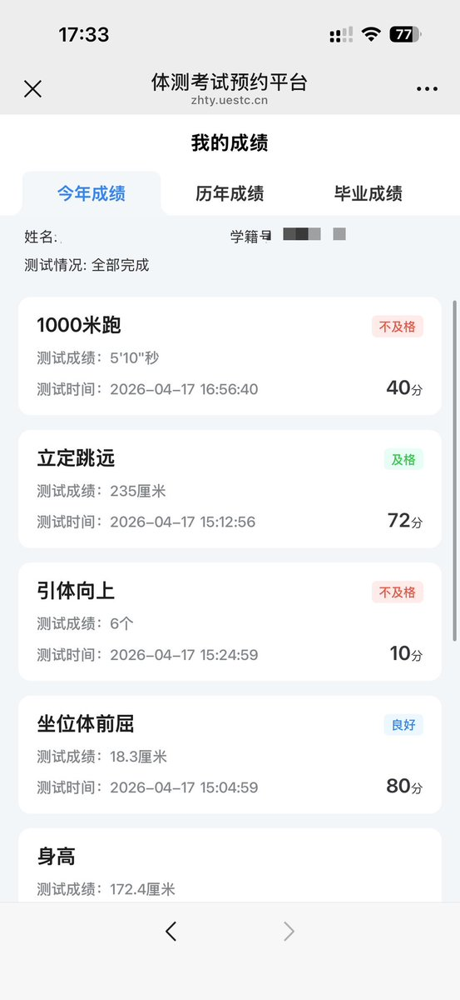
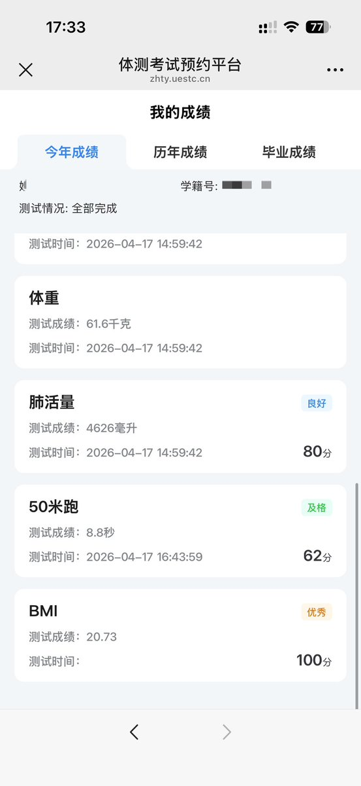
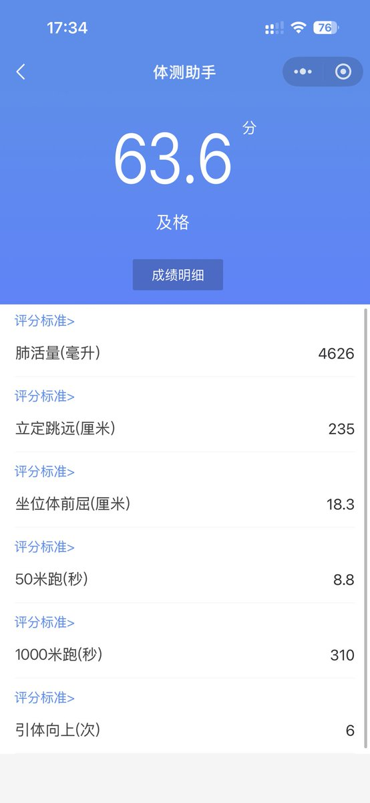

上学的时候唯一一个轻松保持超高分的项目是坐位体前屈，我，柔韧极了……
长跑1000米的话，中考是满分了，后面高中吃糖也疏于锻炼就有点难。
至于引体向上，我手臂力量极弱无比，半个都起不来，包括俯卧撑如果要标准姿势也是一个都做不了。如果只是平板支撑倒是还可以。所以中考就换了仰卧起坐和跳绳。

长跑1000米的话，中考是满分了，后面高中吃糖也疏于锻炼就有点难。
至于引体向上，我手臂力量极弱无比，半个都起不来，包括俯卧撑如果要标准姿势也是一个都做不了。如果只是平板支撑倒是还可以。所以中考就换了仰卧起坐和跳绳。



虽然因为为了避免长痛所有项目都在一天测的 导致因为跳远后乳酸堆积跑步腿完全是软的没有任何力气严重发挥失常 但好在其他项目比去年还长进了 最后还是肘赢了（ https://t.co/kK4shplocG https://t.co/OdA07HqaFA